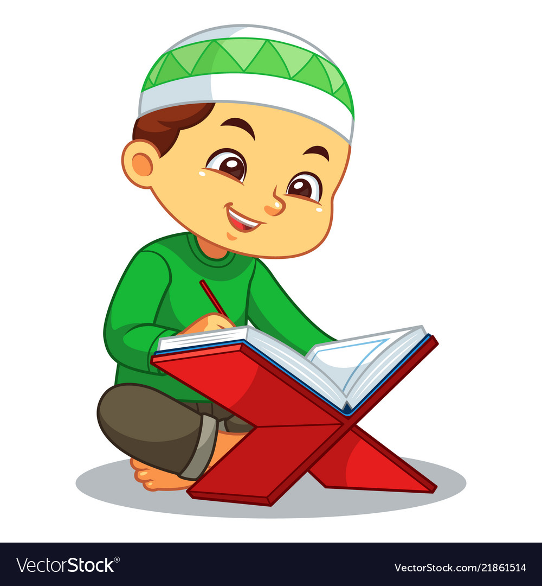
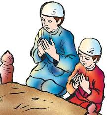

<!--
  Generated template for the DoaharianPage page.

  See http://ionicframework.com/docs/components/#navigation for more info on
  Ionic pages and navigation.
-->
<ion-header>
    <ion-navbar>
      <ion-title>Bacaan Al-Qur'an</ion-title>
    </ion-navbar>
  </ion-header>
  
  <ion-content padding class="pp">
  <ion-searchbar (ionInput)="getItems($event)"></ion-searchbar>
    
      <ion-list *ngFor="let item of list">
          <ion-item>
            <ion-thumbnail item-start>
                
              </ion-thumbnail>
            <p class="text-doa-harian">{{ item }}</p>
            <button ion-button block color="primary" (click)="Go(item)">See Full</button>
          </ion-item>
      </ion-list>
  
      <!-- <ion-list>
          <ion-item>
            <ion-thumbnail item-start>
                
            </ion-thumbnail>
            <p class="text-doa-harian">Al-Zalzalah</p>
            <button ion-button block color="primary" (click)="Go(value='Al-Zalzalah')">See Full</button>
          </ion-item>
      </ion-list>

      <ion-list>
          <ion-item>
            <ion-thumbnail item-start>
                
            </ion-thumbnail>
            <p class="text-doa-harian">Alam-Nasyrah</p>
            <button ion-button block color="primary" (click)="Go(value='Alam-Nasyrah')">See Full</button>
          </ion-item>
      </ion-list> -->


  
  
      <!-- <ion-list>
        <ion-item>
          <ion-thumbnail item-start>
            
          </ion-thumbnail>
          <p class="text-doa-harian">Doa Ziarah Kubur</p>
          <button ion-button block color="primary" (click)="Go(value='masuk_rumah')">See Full</button>
        </ion-item>
      </ion-list> -->
  
      <!-- <ion-list>
        <ion-item>
          <ion-thumbnail item-start>
            
          </ion-thumbnail>
          <p class="text-doa-harian">Doa Naik kendaraan dan bepergian</p>
          <button ion-button block color="primary" (click)="Go(value='masuk_rumah')">See Full</button>
        </ion-item>
      </ion-list> -->
  
  
  
  </ion-content>
  